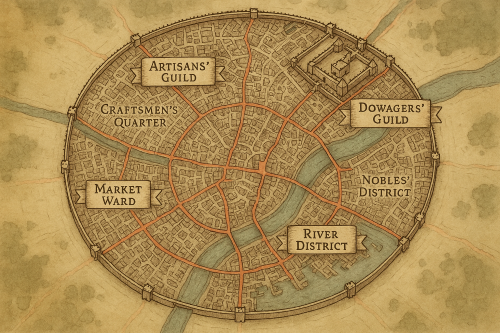

GuildWars is a tabletop roleplaying game set in a bustling city, where each player controls a unique Guild—an organization such as a thieves’ guild, mercenary company, farmers’ collective, religious order, trade guild, or any group the imagination allows. Each Guild is composed of leveled 5e characters, a variety of staff, valuable resources and assets, and a custom guild house within the city.
Players develop their Guilds by recruiting members, securing resources, forging alliances, and overcoming challenges. They must navigate threats both internal and external—whether through combat, subterfuge, market maneuvers, or infiltration of rival guilds.
Ultimately, each Guild vies for dominance, seeking to gain control of the city and claim victory.

There is no Game Master in GuildWars, instead all players are Game Members, all reponsible for contributing to a functioning game, but also where activity that assists the game grants the member some level of influence in the world, in a way all players accept. Veto rulings mean the game continues in a pattern agreeable to all game members.
There are various necessary tasks to run the game:
At any time a player can propose an Action that they feel is worthy of Influence. See Veto rules below to handle disagreements.
GuildWars is intended to be self balancing. With complete freedom afforded the players, ludicrous, non story worthy activity might be added. The veto system is an attempt to control this, giving players the chance to vote to remove or cancel such activities. This mechanic gives players collective majority control to alter campaign direction. Its worth noting here that veto power can override these rules, should the players so decide.
At any time, during any period of the game, a player holding a Veto Token may spend that token to call veto on a statement made by a player. This triggers a vote of all players, to decide whether that statement is allowed to continue.
In either outcome, no further veto is allowed on that or any similar statement for the rest of that session.
At the following times the following players receive one Veto Token:
Wherever (I) is placed signifies a suggestion that using a Deck of Inspiration cards (for instance StoryCaster, or similar), or a Random Generator Table, or AI tools might be useful in this situation to inspire new ideas in the creation process.
In GuildWars an intitiative can sometimes be called for to determine Player action order. This can be actioned in a way decided by the players, whether by rolling a d20, in order of age, order of Table seating order or etc. Often an initiative round is followed by a ‘reversed inititiative’, where the last player in the previous round plays first, and the order is reversed until the first in the first round is the last in the second round.
Session Zero prepares the game. Players set the theme of the game, city districts, their guilds, leaders and etc. At this time the City Map is a blank slate, ie a grid of tiles, but otherwise ready for definition by the players.
The players, by voting (potentially useful to have agreed in advance), will decide:
Each player gets:
In order of initiative;
Repeat until at least one feature per player is described. More can be defined if the players seem to be enjoying it, and the GM can proceed until they deem sufficient tiles are described.
In reversed order of Initiative;
District Setup continues (following Initiative then Reversed Initiative) until Players choose not to continue, or until there are at most 3 times the number of districts as players.
It is finally time, now that the city is drawn and all headquarters are placed, to set up your Guild.
Each player gives a brief description of their guild including;
introduces their guild leader and second (I)
the type of people attracted to the guild (I)
the main revenue, usually delivering the produce of one district to the need of another (I)
the location and nature of the guildheadquarters (I):
Guild tokens as acquired in the can be spent during setup to;
At the end of this round, Players lose any remaining Guild tokens Players Do Not lose any remaining Guild tokens
The Guild characters can be ultra simple stat blocks or full TTRPG characters in their own right, as chosen by the players
Each member has 5e stats (rolled 6x3d6) and a class chosen by the Player. Usually only battle relevant equipment would be chosen. Name, Class(es) and level(s) of all guild members are always public. Complete the Guild members character sheets now.
Recruits would have only their race and scores, no inventory, class, or abilities.
Each Guild has a stockpile of resources. Guilds don’t need to worry about storage of these items, although security of these items is not guaranteed. By default they are stored, along with Guild’s treasury, in the Guild Head quarters.
Guilds can gain influence with various factions within the city through a variety of actions and interactions. Influence is tracked through Faction Standings and is essential for climbing the Faction Ladders, which are necessary to win the game. Each guild’s standing with a faction is a numerical value, typically starting at 50 (neutral) and ranging from 0 (hostile) to 100 (ally).
Influence with factions will both incur costs and benefits to the Guild, they will also be stepping stones to further influence, including requirements of victory conditions.
The following actions are examples of how to increase Influence with a Faction:
A game round consists of a specific period of time.
There are three game rounds in a game, each extending in duration as the players have more power, and hence it takes more real world time to execute their actions.
The players may decide on the duration of the rounds, but as a guideline, the first round should take one month, the second 2 months, and the third three months.
Each Guild receives all resource(s) that each District they control generates.
During a game round (remember this is a period of time, usually one month) each guild can plan to take one action for each squad they have. Guilds may plan one action per squad that they have. Options include;
Initiate PvP 1:1 - the Player calls out a character from another guild.
Initiate PvP royal rumble - a guild declares war against another. A skirmish battle between all guild members of the two guilds. If this passess with no successful veto Both guilds lose all further actions from all members for the round.
Initiate PvE - attempt to perform some action against a threat
Change guildleader. Pass this in secret to the GM, as this action is secret. You may decide to make it public. If the new guild leader is a higher level than the current leader, this doesn’t cost your action. See below for rules about guild leaders.
Take control of a District, the target district must have at least 50 Standing with the Guild, and must be adjacent to a district.
Steal resources - Choose 2 districts, and steal the districts generated resources. If the target District is controlled by any guild, it initiates PVP with a character of the defending players choice.
Each of the Planned action are now planned out. This can take up to the period of time that
Any Round points gained during the round can now be spent.
These events are drawn from a deck of cards, at the start of every month, and are relevant to all players, for the duration of the month.
In all cases, the person drawing the card describes the effect, within the limitations of the card.
These events are drawn from a deck of cards, at times specified by the game, sometimes openly, as a result of a new month, and are relevant to the whole city, until triggered, or silently, in which case they are held by that player until triggered, and can only be triggered by that player.
The card must be read aloud in full when drawn openly, and/or at the time it is triggered.
There are a host of ways to win the Game.
The previously described Faction trees will show the levels of influence guilds have. needed to win the game.
While influence with factions will both incur costs and benefits to the Guild, they will also be stepping stones to further influence, as well as lynchpins to victory.
Certain levels in each of these ladders are required to win the game